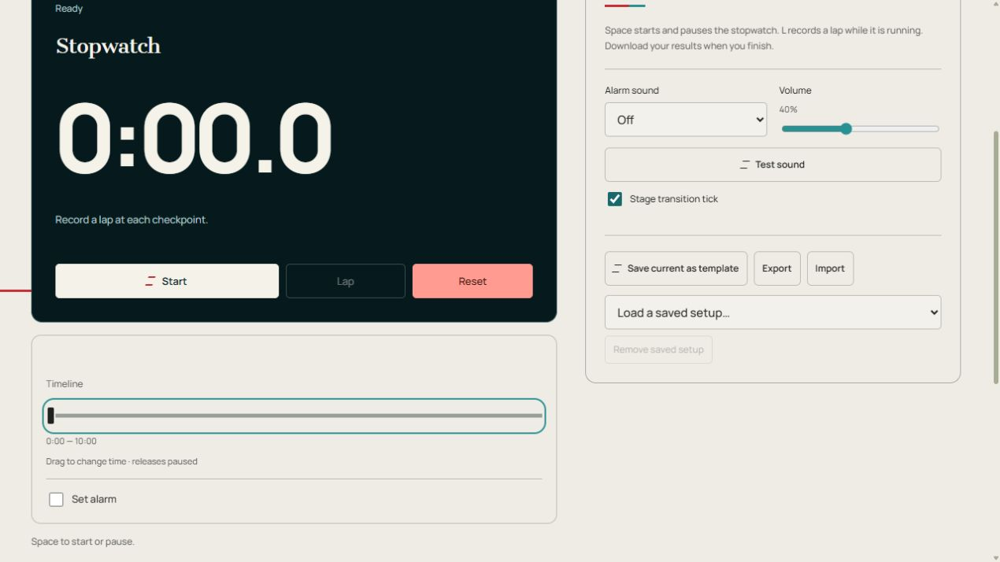

Cronómetro en línea
Cronómetro en línea con tiempo transcurrido, divisiones de vuelta, pausa y reanudación, y exportación de resultados CSV.
Cronómetro
Espacio para iniciar o pausar.
Mantenga abierta esta pestaña. Las alarmas móviles y de fondo dependen de su navegador y dispositivo. Después de una recarga, las sesiones guardadas vuelven en pausa.
Vueltas y divisiones
Tus vueltas aparecerán aquí. Presiona L o toca Vuelta mientras corres.
| Vuelta | Parcial | Total |
|---|
Cómo funciona y consejos
Cómo funciona Cronómetro en línea
El cronómetro en línea mide el tiempo transcurrido contando hacia arriba. Presione Iniciar para comenzar, Pausa para congelar la lectura y Reanudar para continuar con la misma ejecución. Se excluye el tiempo de pausa. Restablecer borra el tiempo transcurrido y la lista de vueltas para realizar una nueva medición.
Registra una vuelta en cada punto de control. Split muestra el tiempo desde la vuelta anterior, mientras que Total muestra el tiempo transcurrido desde el inicio. Puedes tocar Vuelta mientras corres o presionar L cuando el foco del teclado está fuera de un control. La pantalla muestra décimas de segundo.
Exportar CSV descarga el número de vuelta, fracciones de segundo y segundos transcurridos acumulados para revisarlos en una hoja de cálculo. El cronómetro y las vueltas se guardan en este navegador; después de una recarga, la sesión vuelve en pausa. Para una fecha límite que llega a cero, elija Temporizador simple.
Configurar y ejecutar el temporizador
- Comenzar desde el inicio de la medición. La pantalla cuenta en décimas de segundo.
- La vuelta registra un punto de control sin detenerse. La pausa sostiene la lectura; Reanudar excluye la pausa del tiempo transcurrido.
- Exportar CSV guarda totales de vuelta y divisiones. En su lugar, exportar en la configuración guarda una configuración JSON.
- Restablecer borra el tiempo y las vueltas. Al mover la línea de tiempo se detiene y se eliminan las vueltas posteriores a la posición corregida.
Controles de un vistazo

- Inicio / Pausa — Ejecutar, mantener o reanudar este reloj.
- Vuelta — Graba una división mientras corres.
- Reiniciar — Regresar al inicio configurado.
- Probar sonido — Verifique el sonido seleccionado y el volumen del dispositivo.
- Inicio / Pausa / Reanudar
- Comienza, mantiene o continúa la misma medición sin contar el tiempo pausado.
- Vuelta/Exportar CSV
- La vuelta registra un punto de control mientras se corre. Exporte descargas CSV en tiempos divididos y acumulativos.
- Reiniciar
- Borra la lectura transcurrida y la lista de vueltas para una nueva medición.
- Línea de tiempo
- Arrastre para corregir el tiempo transcurrido y luego Reanudar. La franja dentro del reloj muestra el progreso.
- Configurar alarma / Alarma en / Probar alarma
- Habilite una campana adicional, arrastre Alarma a una posición de tiempo transcurrido y pruébela. Esta campana tiene su propio interruptor, separado de los sonidos del escenario y del tic de transición al escenario. Mantenga la pestaña abierta.
- Pantalla completa
- Amplía el reloj oscuro. Salir con el control de salida o Escape donde sea compatible. La compatibilidad con teléfonos y navegadores varía.
Configuraciones y configuraciones guardadas
- Sonido de alarma / Volumen / Sonido de prueba
- Elija gong, campana, pitido o apagado, ajuste el volumen y pruebe sin poner en marcha el reloj.
- Guardar actual como plantilla / Cargar una configuración guardada…
- Ingrese un nombre y elija Guardar configuración; Cancelar cierra el cuadro de diálogo de nombres. Elija un nombre guardado para cargar esa configuración. Reutilizar un nombre reemplaza esa plantilla. Las plantillas almacenan configuraciones, no informes de tiempo.
- Eliminar configuración guardada
- Elimina la configuración con nombre seleccionada, no la página del temporizador.
- Exportar/Importar
- Exportar descarga una configuración JSON; Importar carga una configuración exportada desde el mismo tipo de temporizador. Exportar CSV, cuando esté presente, descarga los resultados.
- Estrella delineada / Hacer temporizador de inicio
- La estrella agrega esta página a la fila de favoritos en la página principal y otros temporizadores. Presiónelo nuevamente para quitarlo. Hacer temporizador de inicio elige el temporizador que se abre desde la página de inicio.
- Iniciar sesión con Google / Cerrar sesión / Mis temporizadores / Cargar configuración sincronizada
- El control de cuenta inicia o cierra sesión. Mis temporizadores enumera los temporizadores personalizados guardados. Cargar configuración sincronizada carga los cambios recibidos en la cuenta; pausar un cronómetro en ejecución primero.
- Clic al cambiar de etapa
- Activa o desactiva el clic de transferencia corta por separado de las alarmas de etapa.
- Atajos de teclado
- El espacio comienza o se detiene; L registra una vuelta mientras corre. Los atajos están inactivos mientras el foco está dentro de un control.
Ejemplo: comparar tres intentos
Salida una vez y vuelta en cada llegada. Los totales acumulados de 10, 22 y 31 segundos dan divisiones de 10, 12 y 9 segundos. Haga una pausa al final y Exporte CSV antes de que Restablecer borre las mediciones.
Otras formas de usarlo
- Puntos de control de presentación
- Mediciones de tareas repetidas
Consejos prácticos
- Decida qué cuenta como inicio y fin antes de medir una tarea.
- Utilice vueltas para intentos repetidos o puntos de control en lugar de restablecer entre cada segmento.
- Comparar tiempos parciales cuando los intervalos son comparables; Utilice totales acumulados para comprender todo el proceso.
- Exporte la lista de vueltas antes de borrar los datos del navegador o iniciar una carrera que los reemplace.
- Trate la sincronización del navegador como una herramienta práctica diaria en lugar de una medición de precisión certificada.
Límites de ahorro, sonido y navegador
Las configuraciones, las plantillas con nombre, los temporizadores personalizados y los favoritos se guardan en este navegador. Inicie sesión con Google en la parte superior derecha para sincronizar las configuraciones guardadas. Si aparece Cargar configuración sincronizada, haga una pausa antes de cargar. La sincronización de configuración guardada no sincroniza relojes en vivo entre dispositivos.
Mantenga esta pestaña abierta y pruebe el sonido en el dispositivo que utilizará. Los teléfonos y navegadores pueden retrasar las alarmas en pestañas en segundo plano o mientras están bloqueados. Recargar restaura los relojes guardados en pausa; Cerrar la página no mantiene activa la alarma en vivo.